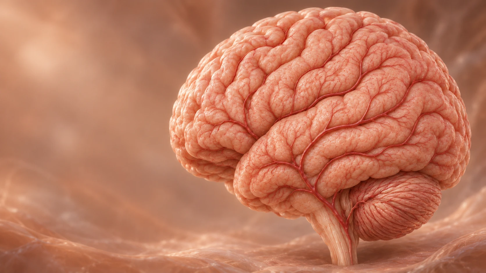
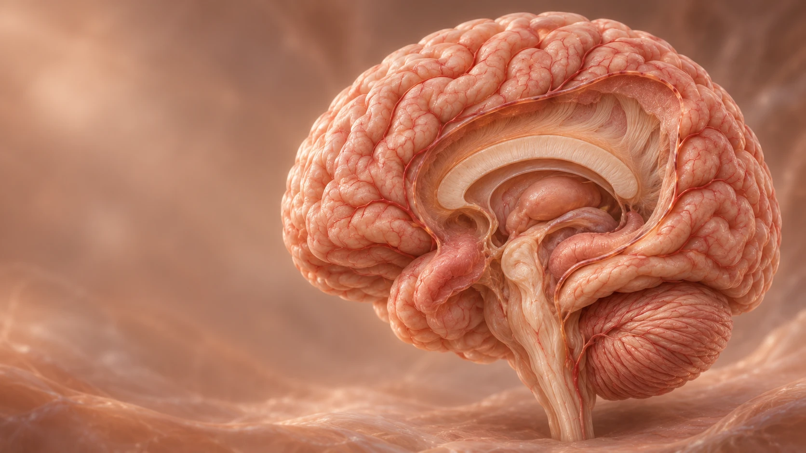

01 / Как работает память
Услышать.
Выделить.
Запомнить.
Одна договорённость. Несколько задач для мозга.
Жизненный пример«Завтра в 10, у входа в парк».
Представьте, что вы услышали эту фразу.


Участие областей показано условно, это не карта нервных путей.